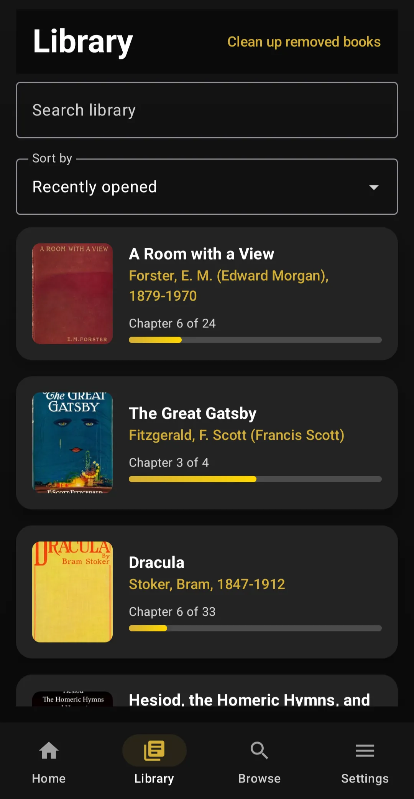
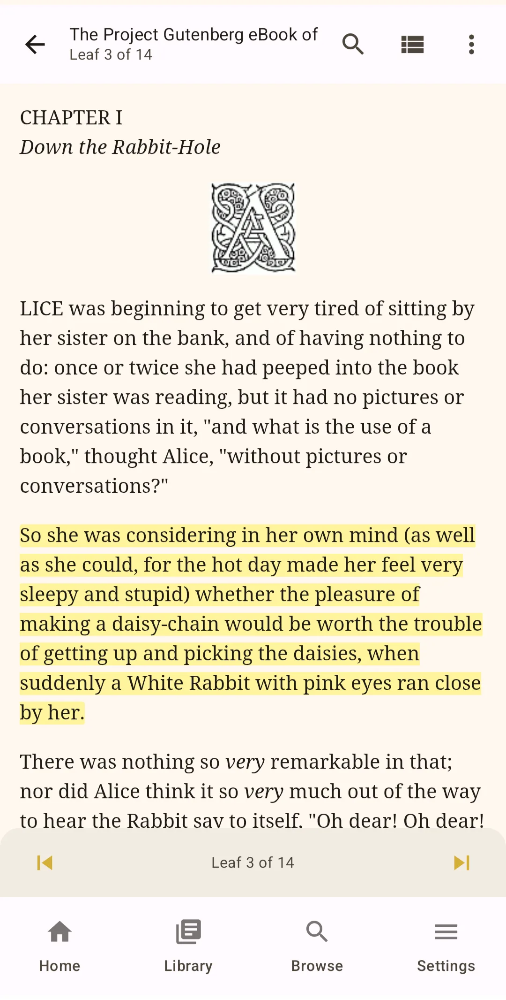
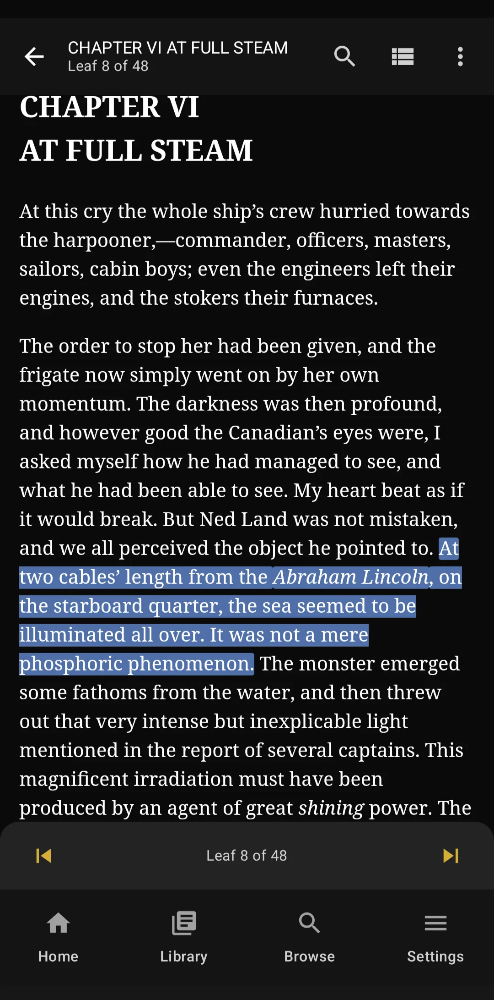

Fantasy adventure
The Wonderful Wizard of Oz
A girl is swept into a magical country. Short chapters, vivid scenes, and a journey worth following.
A welcoming first choice.
View free bookGuten for English learners
A lifetime of English reading. Absolutely free.
Go beyond lessons and textbooks. Discover pirates, detectives, distant planets, unforgettable characters, and the books that shaped English. Find thousands of English-language classics, download your favorites, and read at your own pace with Guten.
No account. No ads. Free books and reading tools. Optional one-time Premium upgrade.


Beyond the textbook
Reading original books lets you encounter English in the wild: real dialogue, vivid descriptions, humor, suspense, and phrases people remember. You don't need to understand every word to enjoy a good story.
The next chapter of your English education isn't a lesson. It's a book.
Your free reading list
Already know some English? Start with an engaging story and build confidence from there. These are original classics, not simplified textbooks. We have put shorter and more approachable options first, then offered bigger adventures for later.
01 / Best places to begin
A clear plot, unforgettable characters, or shorter episodes can help you keep turning pages.
A girl is swept into a magical country. Short chapters, vivid scenes, and a journey worth following.
A welcoming first choice.
View free bookA detective solves one impossible mystery after another. You can finish one complete story at a time.
Try one case at a time.
View free bookMowgli, wolves, tigers, and a world full of danger. A collection of stories rather than one long novel.
Poetic and sometimes old-fashioned.
View free bookA locked garden, an unfamiliar house, and a secret. The mystery makes this story easy to get invested in.
Some regional dialect.
View free bookA dog must survive the harsh Yukon wilderness. Short, dramatic, and full of action.
Some challenging nature vocabulary.
View free book02 / Adventure and exploration
For readers who want danger, discoveries, hidden worlds, and one more chapter.
A secret map leads Jim Hawkins onto a ship full of pirates. One of the great treasure-hunt stories.
Some sailor vocabulary and dialect.
View free bookA man makes an extraordinary bet and sets off around the globe. Every delay could cost him everything.
English translation from French.
View free bookAn expedition discovers a plateau where prehistoric creatures still survive.
Adventure with some scientific language.
View free bookJourney beneath the ocean with the mysterious Captain Nemo.
English translation; detailed descriptions.
View free bookExplorers cross dangerous terrain searching for a vanished man and legendary treasure.
Contains dated colonial attitudes.
View free book03 / Science fiction and strange worlds
These early science-fiction stories are gripping, though several use more demanding language than our first picks.
A scientist travels thousands of years into the future and finds a very strange world.
Relatively short; big ideas.
View free bookMartians invade Earth. A frightening, fast-moving story told by someone trying to survive.
Tense and sometimes descriptive.
View free bookA mysterious stranger arrives at an English village with a secret.
Some older expressions.
View free bookA man is transported to Mars and thrown into battles and adventures on another world.
Action-packed; harder vocabulary.
View free book04 / People you will remember
Sometimes the best reason to keep reading is a character who feels like a friend.
An imaginative orphan brings chaos and delight to a quiet island community.
Lively dialogue and idioms.
View free bookFour sisters discover who they want to become, through joys and difficult choices.
A longer, rewarding next step.
View free bookA curious girl follows a rabbit into a wonderfully strange world.
Playful wordplay can be tricky.
View free bookA note on difficulty: “Start here” means a friendly place to begin reading original English literature, not beginner-level language instruction. Classic books can use old-fashioned expressions, regional dialect, or unusual vocabulary. Pick what interests you most; it's fine to look up words or try another book.
Made for real reading
Select a word and use Guten's Define option to look it up without losing your place.
Highlight memorable expressions, make notes, and return to passages you want to remember.
Change fonts, text size, spacing, and themes, and set a comfortable daily reading goal.
Optional Read Aloud uses your Android device's text-to-speech voices, with adjustable playback speed.
Read anywhere
Download books while you have a connection, then read them offline on a bus, a train, or a quiet afternoon at home. Book downloads, bookmarks, highlighting, notes, and reading progress do not require Premium.

Where English got some of its character
Some of the most influential works in English have left their mark on literature, idioms, quotations, and cultural references. These are exciting destinations as your confidence grows, not necessarily your first stop.
Its rhythms and expressions have influenced centuries of English writing and everyday speech. Explore its stories, poetry, and familiar phrases. This translation uses early-seventeenth-century English.
Explore the King James Bible ↗Comedy, tragedy, ambition, love, betrayal, and language that writers still echo. Start with a play that interests you; the older vocabulary will take some patience.
Explore Shakespeare ↗Wit, romance, social observation, and unforgettable dialogue. Pride and Prejudice rewards readers who enjoy noticing what people mean, not just what they say.
Explore Pride and Prejudice ↗Memorable characters, dramatic stories, and a wonderful ear for voices. Try the shorter A Christmas Carol before taking on Great Expectations.
Explore A Christmas Carol ↗ Great Expectations ↗Literature isn't a single level of English. Older works, including Shakespeare and the King James Bible, are especially important culturally but often very different from modern everyday speech. It's fine to save them for later.
Three easy steps
Install the free Android reader. No Guten account is needed.
Search for one of these titles in Guten's Project Gutenberg catalog. Or open a book's Project Gutenberg link and share a supported link to Guten, or use its ebook number.
Download, read offline, look up unfamiliar words, and enjoy the story. No test at the end.
Questions
No. Guten is an ebook reader, not a language course or a source of graded readers. It is useful for people who already know some English and want to read original books for pleasure and practice.
Yes. Guten's core reading experience, including downloading public-domain books, bookmarks, highlighting, notes, definition lookup, and offline reading, is free. Premium is an optional one-time purchase for Read Aloud and other extras. There is no subscription.
Most original classics are more suitable for readers with some existing English comprehension. Shorter stories and books with strong plots are good starting points, but even these can include unusual or older English.
Some are relatively straightforward; others use older vocabulary, dialect, or literary language. Shakespeare and the King James Bible are included for their influence on English, not because their language is easy.
Guten is currently available on Android. iPhone support is in development.
Guten helps you find free public-domain books from Project Gutenberg. Guten is an independent app and is not affiliated with or endorsed by Project Gutenberg. Project Gutenberg's public-domain determinations are based on U.S. law; if you live elsewhere, check local copyright rules.
Your next great read
From pirate ships to distant planets, a whole world of stories is ready for you. Pick one, download it, and begin.